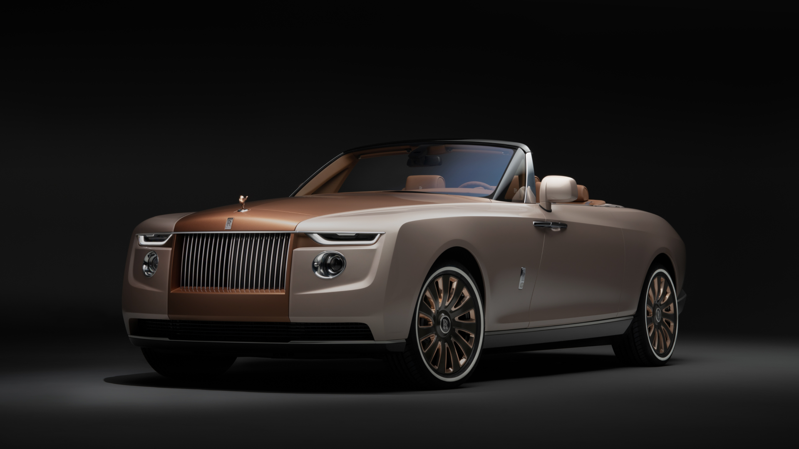

Rolls-Royce-branded

Rolls-Royce Motor Cars Limited is a British luxury automobile maker.
Rolls-Royce Motor Cars Limited operates from purpose-built administrative and production facilities opened in 2003 across from the historic Goodwood Circuit in Goodwood, West Sussex, England, United Kingdom.
Rolls-Royce Motor Cars Limited is the exclusive manufacturer of Rolls-Royce branded motor cars since 2003.
The BBC called Rolls-Royce "probably one of the most recognised icons in the world", and that "the name Rolls-Royce entered the English language as a superlative."
A marketing survey in 1987 showed that only Coca-Cola was a more widely known brand than Rolls-Royce.[4]
Although the Rolls-Royce brand has been in use since 1906, the Rolls-Royce Motor Cars subsidiary of BMW AG has no direct relationship to Rolls-Royce-branded vehicles produced prior to 2003 other than being a major engine and other supplier prior to 2003.
The Bentley Motors Limited subsidiary of Volkswagen AG is the direct successor to Rolls-Royce Motors and various other predecessor entities that produced Rolls-Royce and Bentley branded cars between the foundation of each company and 2003, when the BMW-controlled entity started producing cars under the Rolls-Royce brand.
The Rolls-Royce Phantom four-door saloon was the first product offered for sale in 2003. Since then, the company has expanded its product line to include extended wheelbase, two-door coupé, and convertible versions of the Phantom saloon, as well as the smaller Ghost four-door saloon, Wraith two-door coupé, Dawn convertible, and the Cullinan SUV.